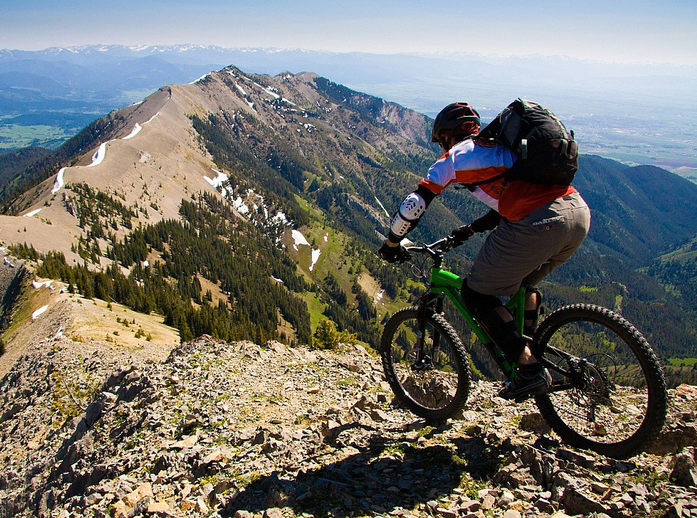
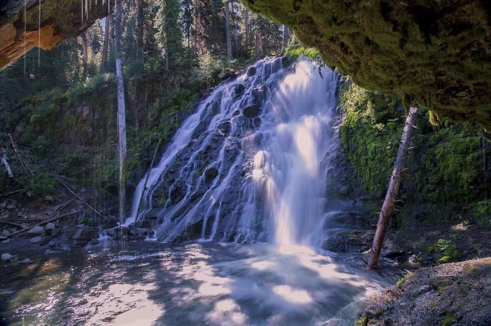

Adventure Tours
Saddle Peak
Intermediate bikers, ride with us to the top of Saddle Peak. This 8.6 mile trail features a forest setting before reaching the Bridger Range's prominent peak, Saddle Peak. Impressive views southwest Montana and the Gallatin Valley will take your breath away.
 Cost: $99/includes meal
Time: 6 hours
Location: Meet at Mountain Bike shop, bus to/from trail
Hyalite Creek
This 11 mile trip is perfect moderate riders. This well-maintained trail features waterfalls throughout the glacial U-shaped canyon. Peak elevation is 1900ft. Check out stunning views of Hyalite Canyon and the lake.
 Cost: $159/includes meal
Time: 8 hours
Location: Meet in parking lot at Hyalite Creek Trail, Gallatin Gateway, MT 59730